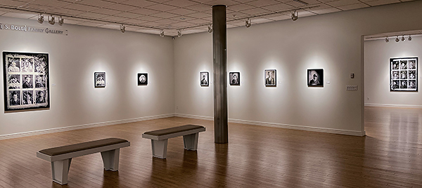
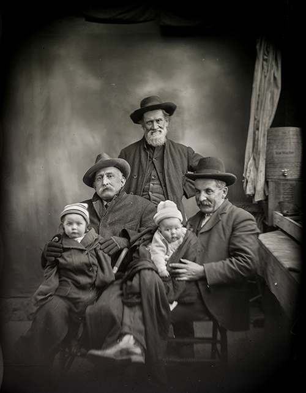
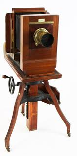

WHERE WE FIND OURSELVES:
HUGH MANGUM
(1877-1922)
American Photographer
Following presentations at the Deland Museum of Art, Deland, FL, and the Nasher Museum of Art, Duke University, Durham, NC, WHERE WE FIND OURSELVES: Hugh Mangum (1877-1922), American Photographer is now avaliable for exhibition through 2026.
In the late 1890s, self-taught photographer, Hugh Mangum (1877-1922), began riding the rails as an itinerant portraitist, traveling primarily in North Carolina and Virginia. Mangum worked during the rise of the Jim Crow era, a period in which laws were passed throughout the South to enforce segregation. Despite this, his portraits reveal a clientele that was both racially and economically diverse and show lives marked by notable affluence and hardship, all imbued with a strong sense of individuality and self-creation. Magnum took over 12,000 portraits during his lifetime. |
 |
One of the profound surprises of Mangum’s photography is its artistic freshness. He had a charm and curiosity that is often reflected in the faces of his sitters. In other images, Mangum’s presence as a photographer is invisible and the sitters appear lost in their own private, interior worlds. Mangum’s ability to capture these moments of vulnerability and intense self-recognition lies at the heart of his gift as a photographer.
|
| After his unexpected death in 1922, Mangum’s glass plate negatives were stored in a barn on his family’s farm in Durham. Slated for demolition in the 1970s, the barn was saved at the last moment, and with it, this surprising and unparalleled document of life during a turbulent time in the history of the southern United States. His negatives are not only images; they are objects that have survived a history of their own and exist within a larger political and cultural history. They hint at unexpected relationships and stories, and confirm how early photographs have the power to subvert common historical narratives. |

The color prints in the exhibition were made from digital scans of black-and-white, dry glass plate negatives exposed and processed by photographer Hugh Mangum at the turn of the twentieth century. Salvaged in the 1970s and donated to Duke University in 1986, Mangum’s glass plates were then professionally cleaned and stabilized by highly trained conservators. In the 2000s, they were photographed in high resolution color with a digital camera. The original negatives, with all their damage and decay, reveal vibrant portraits of forgotten individuals. The scratches, cracks, fingerprints, and delicate color shifts that surround and sometimes cover the sitters’ faces give them new meaning. Taken more than a century ago but printed in 2018, these photographs suggest that the distance between the past and the present is closer than imagined.
|
 |
| The exhibition is organized by Margaret Sartor and Alex Harris in association with ACA Galleries, New York, and MB Abram, Los Angeles. Hugh Mangum photographs courtesy of the Rubenstein Rare Book & Manuscript Library, Duke University. Exhibition prints made by Margaret Sartor and Alex Harris. Curatorial Consultant: Patricia Lanza. Tour Mangement: Photographic
Traveling Exhibitions, Los Angeles. |
A Hardcover Book Is Available
Published by
University of North Carolina Press and
CDS Books of the Center for Documentary Studies
_______________________________________________________________
 |
Brief Biography of Hugh Mangum
Hugh Mangum was born in 1877 in the tobacco-fueled boomtown of Durham, North Carolina. The eldest of five children in a hard-working, well-respected family with a web of kinship that spread out across the county, Mangum considered himself an artist from a young age. In order to pursue his education in the fine arts, Mangum pushed the boundaries of what was generally considered appropriate for a man’s schooling at the time. As a boy, he took art classes at the Methodist Female Seminary in Durham and later studied art at Salem College, in Winston-Salem, the oldest educational institution for girls and women in the United States. When Mangum was sixteen, his family moved from downtown to a farm at West Point on the Eno where he built his first darkroom. By 1897, he was making studio portraits and in 1899 began working as an itinerant portraitist. In 1906, Mangum married Annie Carden of East Radford, Virginia, and settled there. He returned often to Durham and continued to set up temporary studios in railroad towns across Virginia, North Carolina, and West Virginia until at least 1912. After a fire destroyed his Radford studio in 1919, Mangum took over a well established permanent studio in nearby Roanoke, moving his family there in 1921. Hugh Mangum died of pneumonia in Roanoke in 1922 at age forty-four.
The Penny Picture Camera

Part of what makes Hugh Mangum’s work such an extraordinary contribution to both the historical record and the history of photography was his method of recording multiple portraits on a single glass plate negative. For most of his portrait work, Mangum used a Penny Picture camera—a small and somewhat rare camera, mounted on a tripod and equipped with movable backs. These backs held the glass plate negative behind the lens and could be made to slide vertically and horizontally. Through a step-and-repeat process, it was possible for Mangum to record multiple exposures in rows and columns, creating a grid-like pattern of individual images on a single plate. These multiple-image plates provide viewers today with an unintended record of the succession of sitters who passed through Hugh Mangum’s studio on any given day.
When traveling, Mangum announced his arrival on printed broadsides. Some of these advertisements survived, stacked among his glass plate negatives. They promote “All Kinds of Pictures” and “Specials to School Children.” “Come at once,” Mangum urged in underlined letters, “and avoid the rush.”
Exhibition Loan Information
WHERE WE FIND OURSELVES:
HUGH MANGUM
(1877-1922)
American Photographer
Contents
42 framed photographs (various sizes)
Introductory text panel and labels to print
- List of Works with Images and Dimensions -
Space Req:
160 linear feet
Publication:
A Hardcover Book Is Available
Published by University of North Carolina Press and
CDS Books of the Center for Documentary Studies
Loan Fee:
Upon request
Shipping & Insurance:
Exhibitor responsible
Requirements:
Appropriate security, environmental controls
Website:
www.p-t-e.org/mangum
For More Information and to Schedule Dates
Please Contact:
Tel: 310 397 3098
Email: info@p-t-e.org |
|
_____________________________________________________________
Schedule
as of 2/24/24
2023
OPEN
2024
March 23 - June 23
The Muzeo
Anaheim, CA
2025
OPEN
2026
OPEN
|